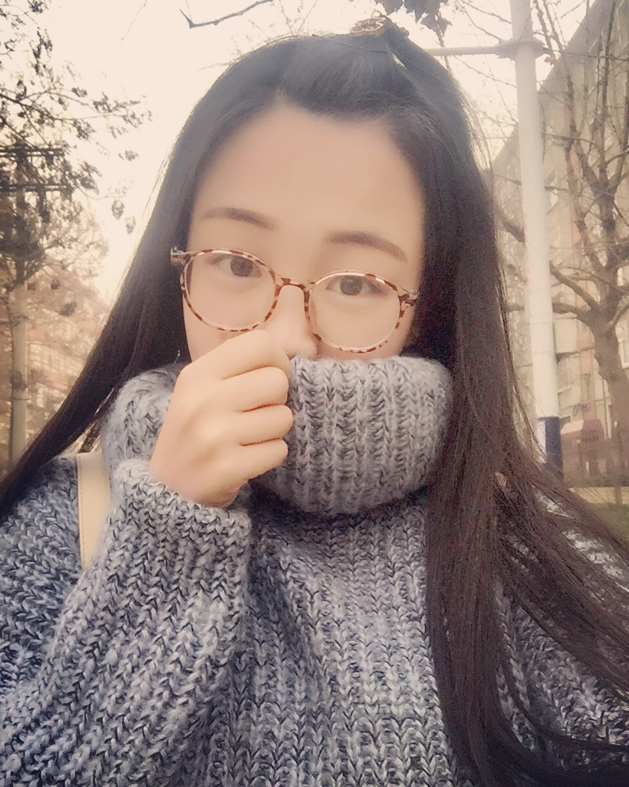
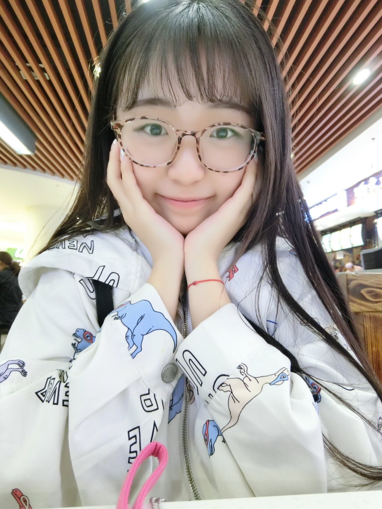
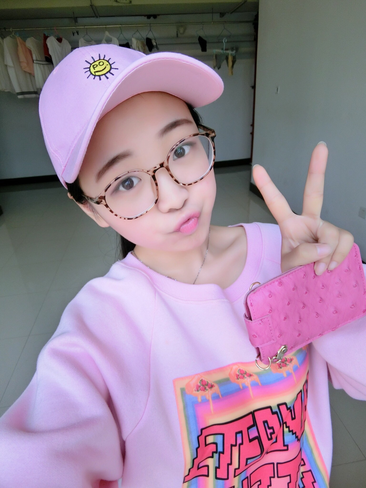
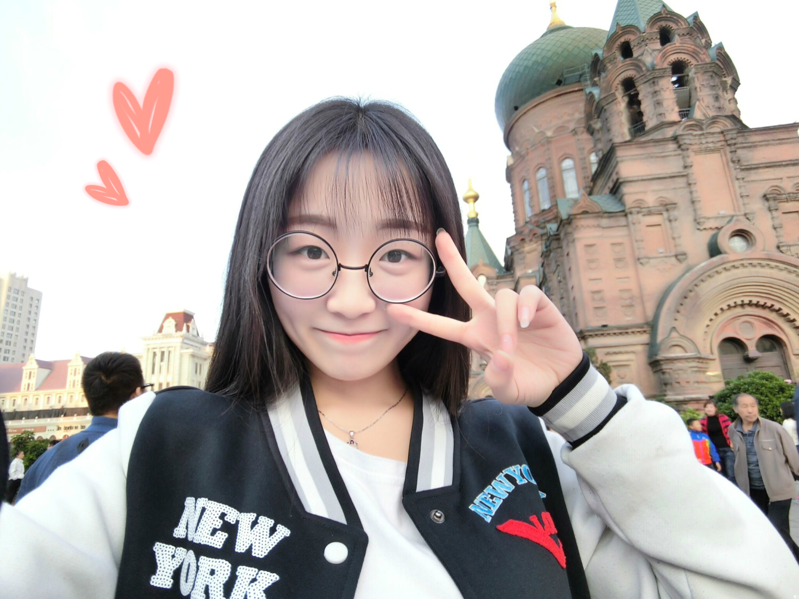
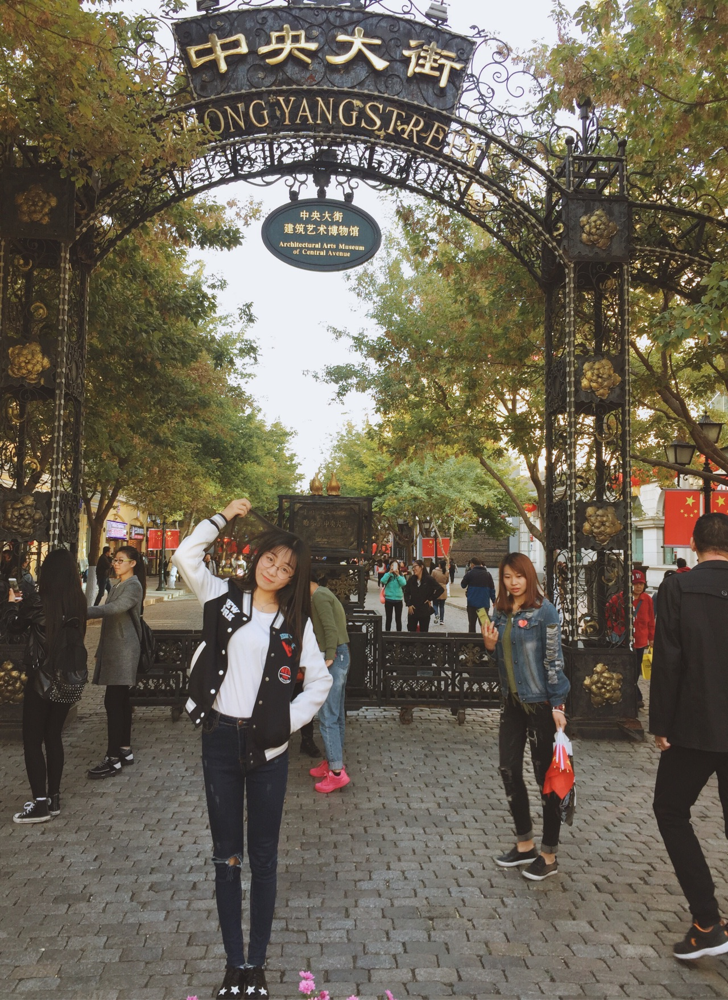
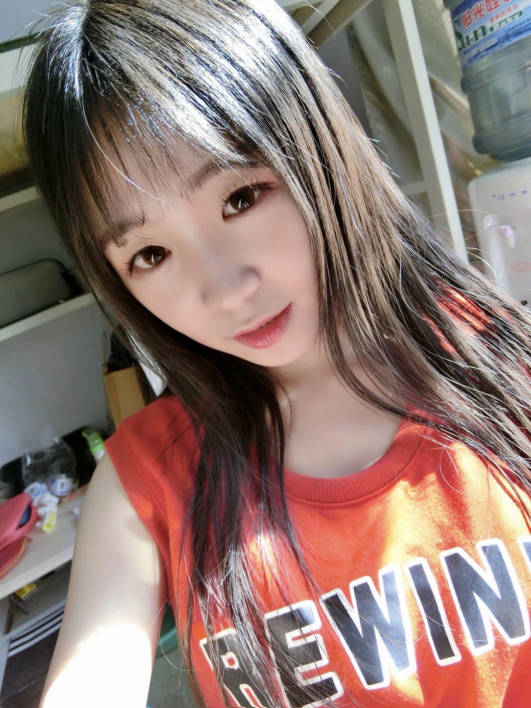
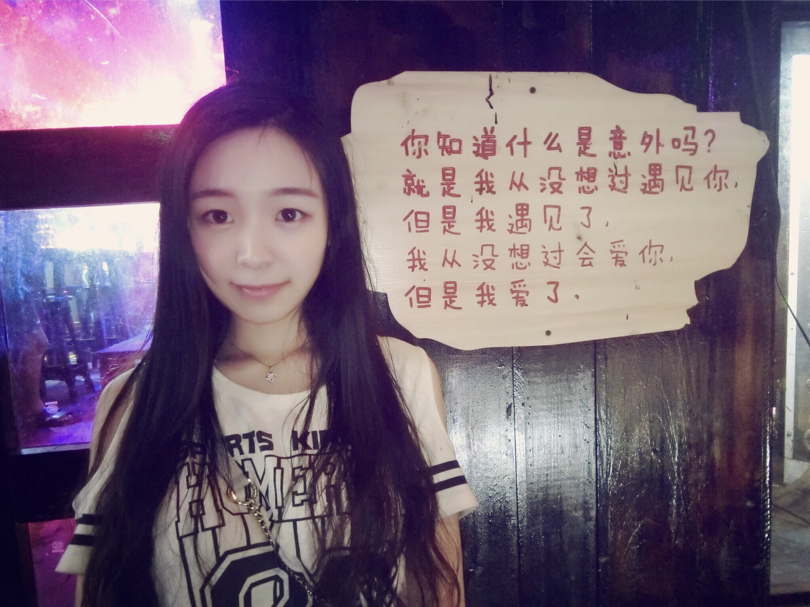
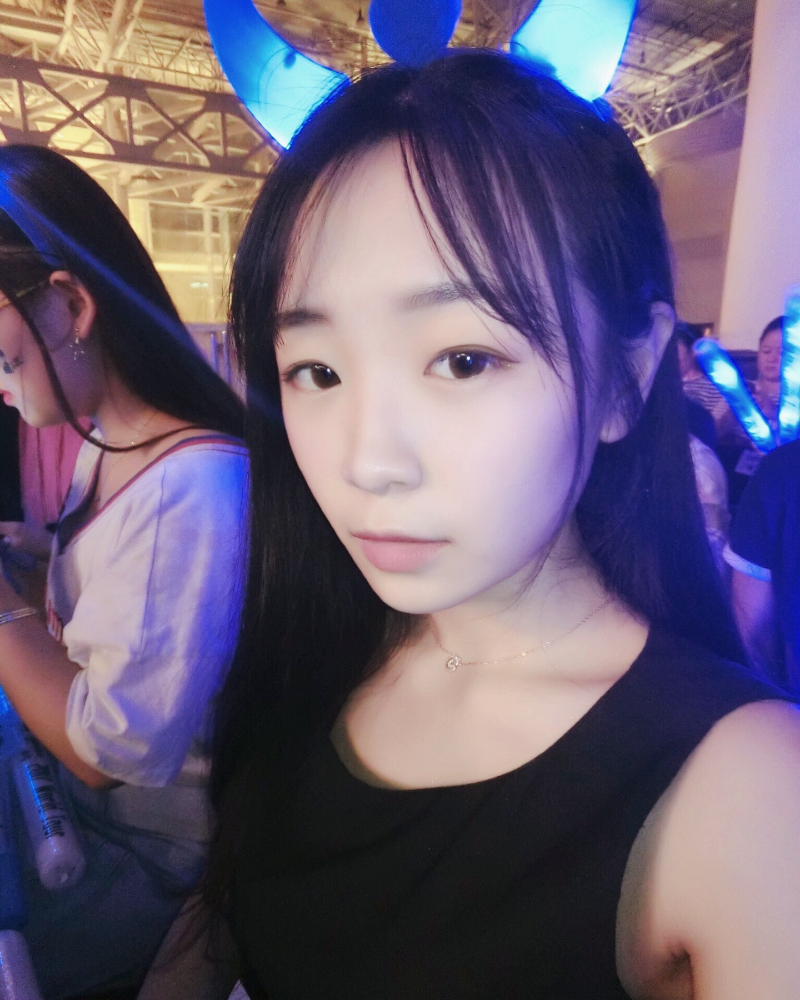
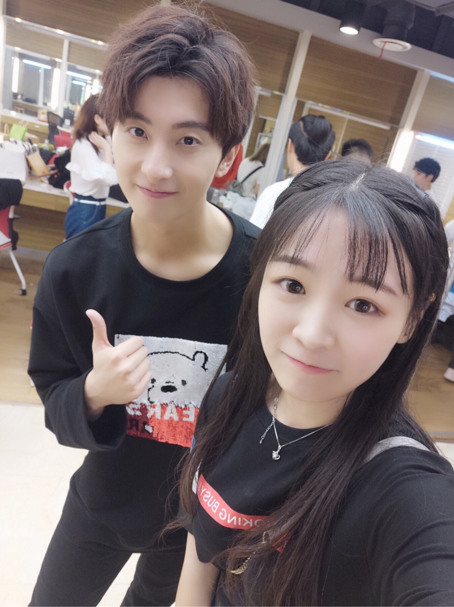
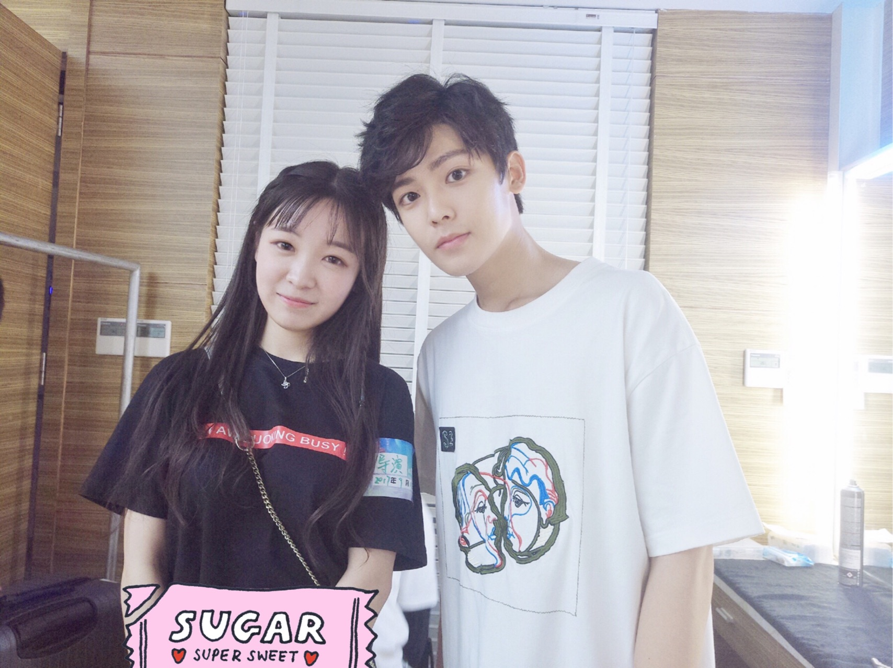

名字:
萌球
性别:女
介绍:一个胸大有脑的天然萌小瘦子
问题
答案
新建于:2017-09-18 01:34:18 PM，更新于2017-09-18 07:09:18 PM
Pre上一页
Next下一页
跳页:
正文: 初中的时候，
突然觉得戴眼镜好漂亮，
然后就硬是配了近视眼镜，
结果眼睛度数一发不可收拾了。
家里没有一个人戴眼镜，
后来醒悟了也晚了，
大三做了近视手术，
现在太后悔初中的时候叛逆，
不近视非要戴眼镜。
如果有机会，
想穿越回去把初中的自己打一顿。





这些都是大学的照片，
自我感觉戴眼镜的看起来还可以，
但是当我对比了没戴眼镜之后，
就知道了以前多么搓了，
而且戴眼镜会显得眼睛很小，
没有神。
做了手术之后，
很久没有化妆洗脸，
皮肤也变好了很多。





（不是男朋友！这几个人是明星啊 一个是牛骏峰，楚乔传元嵩皇子，另一个是侯明昊，新晋的小鲜肉即将出演西游记女儿国的唐僧，不是男朋友啊，我哪能找到这么帅的男朋友，我是个实习导演，在化妆间拍的 ，还有别的明星合影，我只是随便放了两张，没想到你们都不认识......）
感觉眼睛都变有神了，
眼镜也变大了，
也不肿眼泡了。
就是这样，
于是变的更爱照相了，
这辈子可能是没救了。
咯吱咯吱咯吱————————
回答大家一下，关心的三个问题～
第一，关于近视手术。
我在我家那边最好的医院，省二院做的，大家想做要找大医院做，我忘了我做的什么了，好像分三种还是四种类型，我做的是最贵的那种，毕竟是在眼睛上动刀，就选的最好的，包括药、手术费、检查费、防护镜等等乱七八糟加一起大概一万-两万之间。
大家想做一定要去大医院，专业的医院做，爱尔眼科医院好像有国家补助能便宜一些，但是没我还是选择的大医院，看大家需求自己选择就好。
没什么具体要求，做手术前两个月别带隐形就好，别的去检查的时候医生会告诉你。
第二，关于导演。
我这个脸，难道看不出我还是个宝宝吗？
哈哈开玩笑，我是快乐大本营实习导演，大四还没毕业，所以才会去和明星合影，你们说的潜规则什么，只存在于拍电视拍电影，存在于不出名的那些小明星中，来大本营的都是当下最红的明星，而且大本营请艺人还不给钱，潜什么潜。
第三，关于戴眼镜是否会近视。
首先，我家族包括我所有的直系亲属没有任何近视基因
其次，我不是度数加深，而是在不近视的时候偏要假装近视，带了50度的眼镜，而且每次放假都要去加50度，59度的眼镜带着看的很清楚，不存在戴近视镜看不清。
然后，我为什么当初不戴平光镜，第一戴平光镜会反光眼镜很不舒服戴过的应该知道，最重要的是，我在一个很严格的中学，头发要求前不过眉侧不过耳，我们全校都是这样，更别说我为了好看戴个眼镜去上学了，非得被老师骂死，只有戴近视镜才能名正言顺戴眼镜。
最后，请给我普及知识的小哥哥们别再普及知识了，您说的我们都懂，我们当年只是固执，不近视偏要带近视眼镜才变得真近视了，并不是本来就近视后来近视加深了。
Pre上一页
Next下一页
跳页: